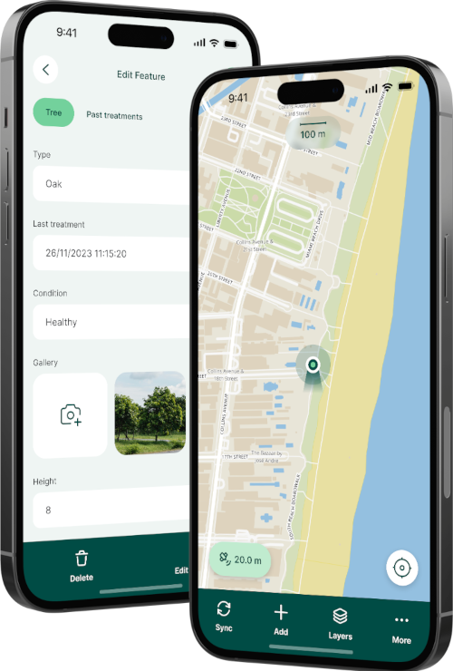

Collect offline spatial data on the go and synchronize it with your central GIS server database.
Gis3W provides complete support, training, and professional consulting for Mergin Maps, the leading open-source mobile data collection solution based on QGIS.
With the Mergin Maps mobile app, you can:

Integration at the QGIS project level ensures a perfect connection between WebGIS mapping in G3W-Suite and offline data collection with the Mergin Maps mobile app.
A single management interface to publish your QGIS desktop map as a WebGIS page and deploy it as a mobile field project simultaneously.
Manage and synchronize user accounts, operator roles, and data entry permissions in a centralized manner.
Instantly synchronize geographical surveys collected in the field directly into corporate relational databases (PostGIS) visible on WebGIS.
We provide full support from server installation to field team training.
Specific training to set up QGIS projects for field work, design mobile data forms, configure offline base maps, and sync datasets efficiently.
Consulting and support for PostgreSQL/PostGIS databases integration, topological conflicts resolution, and private Mergin Maps server setups (cloud or on-premises).
Development of custom integration modules, automated data workflows, and new features in direct synergy with Mergin Maps core developers.